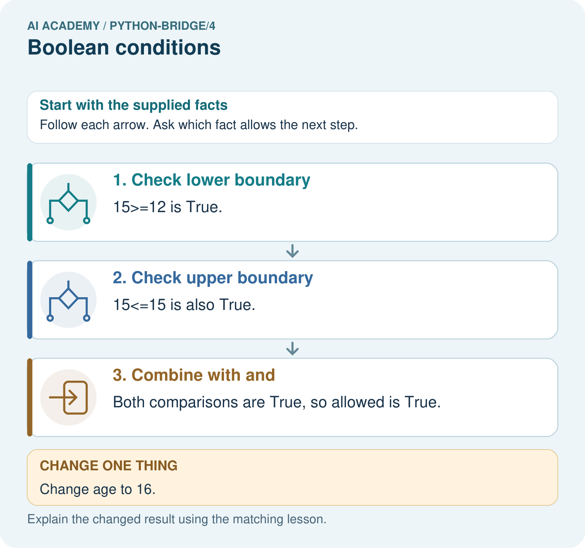

AI Academy · Python readiness bridge · Workbook
Boolean conditions
Learn to understand, design, build, test and explain AI systems responsibly.
Project: Python readiness portfolio
Workbook · 1 of 12
Recall and choose your starting point
Try the recall before opening notes. Then use a different colour or a labelled second line to correct your explanation.
Expressions and operator order
Without opening the old lesson, explain one key idea from Expressions and operator order. Give an example and a mistake that the idea helps you avoid.
From a paper algorithm to Python
Without opening the old lesson, explain one key idea from From a paper algorithm to Python. Give an example and a mistake that the idea helps you avoid.
Workbook · 2 of 12
Practise with fading help
Use W2: Trace separate checks for Boolean conditions. Record the answer once; the lesson and workbook refer to the same attempt.
| Given inputs | Procedure I chose | Middle steps | Result and check |
|---|---|---|---|
Workbook · 3 of 12
Individual reasoning check
Use the worked case for Boolean conditions. Proposed explanation: “At most excludes the boundary”. Decide whether this explanation is supported. Point to the step or supplied fact that decides; explain your repair if needed.
Workbook · 4 of 12
Independent transfer case
Independent case: Combine requirements without replacing AND
Predict all four booleans. Eligibility requires science AND at most100 pages AND availability. Repeat with genre="history" and all other values unchanged. Which OR result could wrongly suggest the genre requirement passed?
pages = 90
genre = "science"
available = False
print(genre == "science" and pages <= 100)
print((genre == "science" and pages <= 100) and available)
print(not available)
print(genre == "science" or pages <= 100)
Attempt this case before feedback. Record any help. Earlier examples below are further practice; a case already practised with feedback cannot establish fresh transfer.
Workbook · 5 of 12
W1 Translate the requirement
Write a condition for an activity taking at most 12 minutes and being quiet. Explain why exactly 12 minutes is included.
Workbook · 6 of 12
W2 Trace separate checks
For (minutes, quiet) cases (11, True), (12, False), and (13, True), write the time comparison and final suitability values before running the program.
Workbook · 7 of 12
W3 Distinguish alternatives
Complete all four Boolean combinations for pencil or crayon. Explain the both-available case and the effect of not pencil.
Workbook · 8 of 12
W4 Write a new rule independently
A fictional puzzle qualifies when its duration is at least 5 and at most 9 minutes and its available flag is True. Write the condition. Predict results for (5, True), (9, True), (10, True), and (7, False). Choose a case that detects replacing and with or between the range check and available.
Workbook · 9 of 12
W5 Separate a check from a guarantee
Explain why a True suitability result does not prove that the supplied duration is accurate or that a child has permission to start the activity.
Workbook · 10 of 12
Project checkpoint and reflection
Add a labelled boolean conditions evidence sheet to Python readiness portfolio. Show how you can translate stated requirements into comparisons. Use the supplied fictional case and keep its inputs, intermediate steps, calculation or prediction, and limitation. Connect this record to last week’s record; a matching answer without a trace is insufficient.
Workbook · 11 of 12
Feedback, return check and learning record
| Evidence | My record |
|---|---|
| Worked alone / hint / model | |
| First step I repaired and why | |
| New case checked later; date and result | |
| What I can now explain without notes | |
| One remaining question |
Revisit this idea with your teacher after a delay. Familiarity is different from explaining and using it on a changed case.
Workbook · 12 of 12
Pictorial case practice: Boolean conditions
Two conditions for entry. A toy club accepts integer ages from 12 through 15 inclusive.
Python 3: age=15; allowed=(age>=12) and (age<=15); print(allowed). No type validation is implemented here.

Give both comparison results for ages 11, 15 and 16. Which comparison rejects each outside value, and why does and matter?
Support used: alone / hint / worked example. This record is practice evidence.
Project connection: For Python readiness before the Responsible Plant Classifier, retain a trace of the values, the predicted outputs and the changed-case explanation. Use actual Python 3 results to check the prediction after reasoning first.